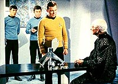
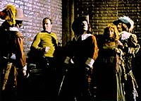
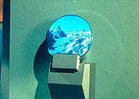
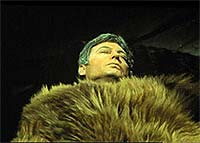
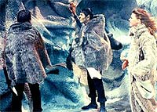
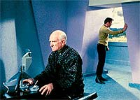
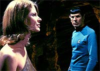

|
MANCHETE
DO EPISDIO
Viagem
de 5.000 anos no passado leva
relao de Spock e McCoy ao extremo
Episdio
anterior | Prximo episdio
Sinopse:
Data Estelar:
5943.7.
 A
Enterprise est estudando o planeta Sarpeidon, que ser em breve
destrudo por sua estrela, prestes a se tornar uma supernova. Kirk,
Spock e McCoy descem superfcie, onde encontram uma biblioteca.
O planeta est abandonado, exceto pelo bibliotecrio, um tal de
sr. Atoz. O funcionrio confunde os trs com habitantes do planeta
e diz que eles precisam se apressar.
O trio descobre que toda a populao do planeta se refugiou em seu
prprio passado usando aquela biblioteca, que abrigava um complexo
portal do tempo chamado "Atavacron". Atoz diz que eles
precisam logo escolher seu local de destino e partir, antes que o
planeta seja destrudo. Nenhum deles, entretanto, tem inteno de
viajar no tempo, e ficam apenas estudando os registros histricos.
Entretanto, quando Kirk ouve um grito de socorro de uma mulher, ele
corre em sua direo. Sem perceber, ele atravessa o Atavacron e
vai parar em uma poca que lembra a antiga Salm, da Terra --um
local com cara de Inglaterra do sculo 17. Spock e McCoy, vendo seu
amigo desaparecer, correm atrs dele. S que o equipamento estava
programado para lev-los a outro lugar, e ambos vo parar na ltima
era glacial de Sarpeidon.
 Quando
esto prximos ao portal --que eles no podem ver--, Kirk, Spock
e McCoy conseguem ouvir uns aos outros. Na poca medieval, isso no
faz bem ao capito da Enterprise. Alm de arranjar inimigos ao
defender a tal mulher que estava sendo atacada, ele acusado de
bruxaria por conversar com uma voz do Alm, que ele chama de "Bones".
Preso, Kirk comea a procurar uma chance de escapar antes de ser
queimado na fogueira.
Na era glacial, McCoy est morrendo por hipotermia. Isso fatalmente
iria ocorrer, se ele e Spock no fossem resgatados e levados a uma
caverna aquecida, por uma mulher chamada Zarabeth. Ela conta que
tambm no pertence a aquela poca, mas foi atirada ao exlio
por um tirano de Sarpeidon. A configurao usada para ela no
Atavacron a impede de voltar. Infeliz por sua solido, ela diz a
Spock e McCoy que eles tambm no podem voltar, mesmo sem ter
certeza de que isso verdade.
Enquanto McCoy est se recuperando, o comportamento de Spock est
se transformando radicalmente. Ele est mais emotivo, agora come
carne, e acaba se apaixonando por Zarabeth. McCoy tenta convencer o
Vulcano de que eles devem tentar voltar, mas Spock no aceita essa
possibilidade, para poder ficar com Zarabeth. Ao insistir no
assunto, McCoy chega quase a agredir a mulher, e quase leva uma
surra de Spock. O mdico chega concluso de que Spock, ao
passar pelo Atavacron, regrediu ao comportamento de seus colegas
Vulcanos de 5 mil anos atrs, poca em que eles esto agora.
Antes dos ensinamentos de Surak, os Vulcanos eram passionais e
extremamente violentos. Graas a essa argumentao, e confisso
de Zarabeth de que talvez para os dois seja possvel voltar, a
dupla resolve procurar o portal.
Kirk, do outro lado, est para ser condenado. Por sorte, um outro
refugiado do futuro de Sarpeidon o encontra, reconhecendo-o no
como um bruxo, mas como um viajante do tempo. Sendo uma pessoa
poderosa e influente naquele passado, ele ajuda Kirk a fugir e o
leva de volta ao portal, por onde o capito consegue regressar
biblioteca.
 De
volta ao presente, Kirk pressiona Atoz a ajud-lo a encontrar a poca
em que Spock e McCoy foram parar. Graas a isso, Kirk consegue
guiar, pelo som da voz, os dois amigos de volta ao portal. Spock
ainda est em dvida sobre partir ou ficar, mas no tem
alternativa quando descobre que McCoy s poder retornar junto com
ele, pois os dois entraram naquela poca juntos. Sem escolha, Spock
obrigado a abandonar Zarabeth. Ao atravessar o portal, ele volta
a ser o mesmo Spock de sempre.
Com a misso cumprida, Atoz corre para se refugiar no passado antes
que chegue o fim iminente para seu planeta. Kirk, Spock e McCoy
deixam Sarpeidon, pouco antes de o planeta ser engolfado pela exploso
de seu sol.
Comentrios:
Entre os ridos episdios do terceiro ano da
Srie Clssica, "All Our Yesterdays"
como um colrio. No porque ele seja mais verossmil que a mdia
dos segmentos da temporada, mas pelo fato de que ele consegue
realmente produzir um grande embate entre Spock e McCoy, rivalizado
apenas (e mesmo assim de longe) pelo que eles tiveram antes em "Bread
and Circuses".
 A
histria no particularmente convincente. A idia de
Roddenberry do "desenvolvimento paralelo dos mundos"
levada ao seu limite aqui, com uma reproduo da Inglaterra do sculo
17 com direito a sotaque britnico carregadssimo (!) e uma era
glacial equivalente que a Terra sofreu outrora.
Em compensao, a premissa de uma civilizao que evita sua
destruio refugiando-se em seu prprio passado extremamente
interessante e criativa, apesar de no ser particularmente vivel
(a no ser que ignoremos o problema fsico da conservao da
massa e da energia e que consideremos que todos os refugiados so
devidamente esterelizados para evitar que a populao cresa
exponencialmente at explodir, com um ciclo em que pessoas voltam
ao passado, aumentando a populao antiga, o que torna a leva de
refugiados do futuro ainda maior, que por sua vez faz a populao
no passado ficar ainda mais densa, e assim por diante).
 Tambm
no facilmente explicvel o fato de uma viagem ao passado fazer
com que Spock se torne um Vulcano "antigo" e
"emotivo" antes. J havamos visto coisa similar antes,
em "This Side of Paradise", de forma at bem mais
convincente. Claramente, aqui, trata-se muito mais de um artifcio
de roteiro para fazer com que a trama funcione em seus prprios
termos. Felizmente, o preo dessa convenincia facilmente
compensado pela qualidade dramtica resultante (mais at do que em
"This Side of Paradise").
A grande qualidade de "All Our Yesterdays" no est
em sua premissa de fico cientfica ou em um roteiro bem pensado
e bem amarrado. Est na fora das cenas de conflito entre Spock e
McCoy. Pela primeira vez, Spock se v diante de uma situao em
que pode agir de acordo com seus sentimentos, sem a forte represso
da disciplina Vulcana. Isso significa muito mais do que simplesmente
poder se apaixonar por Zarabeth; ele agora pode finalmente responder
ao doutor na mesma moeda, deixando claro que ele no aprecia a
agressividade do mdico com relao a ele.
Spock age de forma fundamentalmente egosta. E McCoy quer fazer o
Vulcano voltar razo, o que o leva a um comportamento ainda mais
agressivo para com o Vulcano do que de costume. Os dois esto em
uma situao-limite, e a sobrevivncia de ambos depende de
trabalharem juntos. Spock, entretanto, no est nem um pouco
interessado; ele quer ficar com Zarabeth, a mulher que ele ama.
 O
conflito entre os dois j interessante, mas fica melhor ainda
quando McCoy resolve colocar Zarabeth na dana, acusando-a de engan-los
para convencer Spock de que era impossvel retornar. Ele parte para
cima dela e quase leva uns bofetes de Spock. A cena extremamente
poderosa e oferece o mais explosivo confronto entre os dois.
O drama todo de Spock, que precisa escolher entre sua vida
pregressa e seu amor. Ele claramente est indeciso at o ltimo
momento, quando descobre que a nica chance de McCoy retornar se
ele tambm o fizer. Diante disso, ele no v outra opo seno
deixar a mulher.
As sequncias de Kirk, primeiro na pseudo-Salm e depois com Atoz,
so interessantes e engraadas, mas no se comparam
dramaticamente histria de McCoy e Spock. Elas servem muito mais
como um alvio cmico para a situao extrema dos outros dois
--claramente foram escritas com esse propsito. Por isso temos
personagens extremamente caricatos e apatetados nessas subtramas.
Claramente, o objetivo era dar a Spock e McCoy as coisas
interessantes para fazer --o que foi um belo acerto.
Em termos tcnicos, a equipe de produo tira leite de pedra.
Temos mais uma tradicional cenografia de caverna, que no
impressiona muito, mas, em compensao, o episdio nos brinda com
uma bela representao (tanto em cenrios quanto em figurinos) da
Inglaterra do sculo 17.
O cenrio da biblioteca, apesar de parcialmente reciclado,
interessante, e a direo faz um papel extremamente competente,
especialmente na hora de enfatizar o conflito entre Spock e McCoy.
 Em
termos de efeitos especiais, a equipe se arrisca a produzir uma
tomada exclusiva para esse episdio, com Sarpeidon sendo destruda
por Beta Niobe, tornando-se uma supernova, mas a cena no
particularmente impressionante, nem mesmo para as limitadas
possibilidades da Srie Clssica.
Felizmente, estamos falando de um episdio que no depende de
efeitos estonteantes para se manter. Com dilogos bem escritos e um
dilema de qualidade para Spock, temos um belo retrato de sua relao
de antagonismo com McCoy, como nunca antes tnhamos visto na srie.
Sem dvida, uma das prolas da ltima temporada do seriado
original.
Citaes:
Spock - "I don't like that. I don't
think I ever did; and now I'm sure."
("Eu no gosto disso. Eu no acho que tenha gostado algum
dia; e agora tenho certeza.")
Zarabeth - "Do you know what it's like to be alone, really
alone? Weapons, shelter, food --everything I needed to live-- except
companionship... to send me here alone --if that is not death, what
is?"
("Voc sabe o que estar sozinha, realmente sozinha? Armas,
abrigo, comida --tudo que eu precisava para viver-- exceto
companhia... me mandar aqui sozinha --se isso no morte, o que
seria?")
Atoz - "A library serves no purpose unless someone is using
it."
("Uma biblioteca no tem propsito a no ser que algum a
esteja usando.")
Trivia:
 O roteiro original do episdio, chamado "A Handful of Dust"
("Um Punhado de Poeira"), era bem diferente da verso
filmada. Nesa histria, Zarabeth no existia, e no era Kirk, mas
sim Spock e McCoy, que conseguia um colaborador para ajud-lo a
voltar biblioteca. AO final, a biblioteca intencionalmente
destruda, para evitar mais interferncia com o passado do
planeta, que no seria vitimado por uma supernova.
O roteiro original do episdio, chamado "A Handful of Dust"
("Um Punhado de Poeira"), era bem diferente da verso
filmada. Nesa histria, Zarabeth no existia, e no era Kirk, mas
sim Spock e McCoy, que conseguia um colaborador para ajud-lo a
voltar biblioteca. AO final, a biblioteca intencionalmente
destruda, para evitar mais interferncia com o passado do
planeta, que no seria vitimado por uma supernova.
O monitor do
Atavacron e seu painel de controle foram reciclados do episdio "Assignment:
Earth", onde eles serviram como o computador Beta 5,
pertencente ao viajante do tempo Gary Seven.
A atriz
Mariette Hartley (Zarabeth), pelo visto, era uma das preferidas de
Gene Roddenberry. Depois de estrelar aqui, ela foi convidada para
participar de um piloto produzido por Gene em 1973, "Genesis
II". Ela tambm j havia aparecido em outro clssico da fico,
"The Twilight Zone".
O traje
original de Hartley desenhado para o episdio deixava seu umbigo
mostra. Por isso, ele foi vetado pela NBC, tendo de ser reprojetado.
Para compensar, no piloto "Genesis II", Roddenberry fez
questo de mostrar os umbigos da atriz --o natural, e um segundo,
de mentira, que somente sua personagem possua.
Ian Wolfe, que
aqui interpreta Atoz, j havia aparecido na temporada anterior,
como Septimus, em "Bread and Circuses".
O nome do
bibliotecrio, Atoz, mais do que adequado --obviamente uma
brincadeira em ingls com a expresso "A to Z" ("de
A a Z").
O ttulo do
episdio foi extrado de uma passagem de "Macbeth", de
William Shakespeare.
O episdio
concorreu ao Emmy de 1968/1969 na categoria de Direo de Arte e
Design de Cenrio, mas no levou.
"Interessante que Spock faa contato com sua ancestralidade
Vulcana deste modo", disse Leonard Nimoy a respeito do episdio.
"E finalmente tocante que ele deixe para trs a bela
Zarabeth. Uma mudana da "Shangri-la" original, no qual o
explorador que se apaixona pela garota nativa tenta lev-la com
ele, mas, quando ela deixa Shangri-la, ela envelhece incrivelmente e
morre rapidamente. Neste caso, Zarabeth sabe que no pode partir e
fica para trs."
O episdio
teve continuao em dois romances escritos por A.C. Crispin,
"Yesterday's Son" e "Time for Yesterday"
(publicados no Brasil pela Editora Aleph com os ttulos
"Portal do Tempo" e "O Filho de Spock",
respectivamente).
Ficha
tcnica:
Escrito por Jean
Lissette Aroeste
Direo de Marvin Chomsky
Exibido em 14/03/1969
Produo: 78
Elenco:
William Shatner como James Tiberius Kirk
Leonard Nimoy como Spock
DeForest Kelley como Leonard H. McCoy
James Doohan como Montgomery Scott
Elenco convidado:
Mariette Hartley como Zarabeth
Ian Wolfe como sr. Atoz
Episdio anterior
| Prximo episdio
|